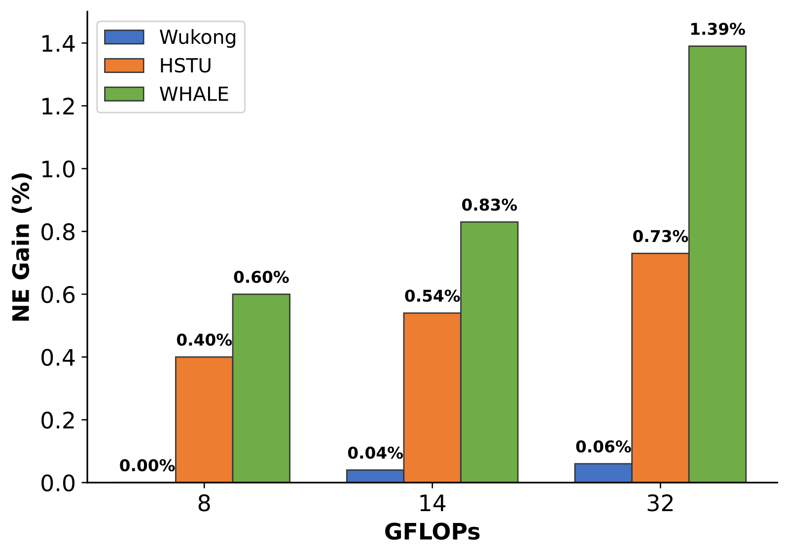
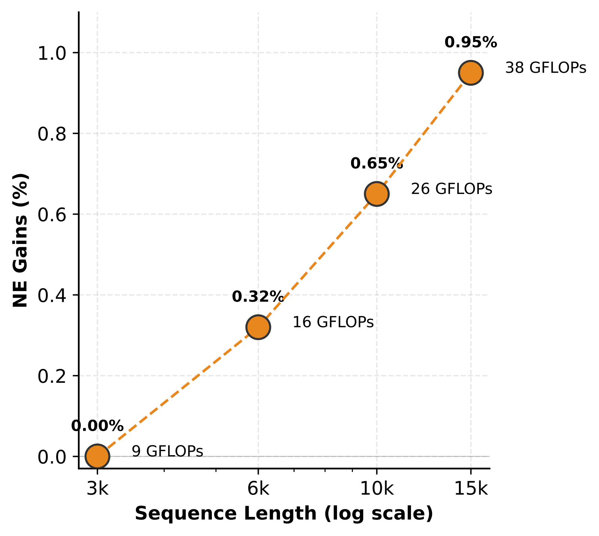

Contents · 8 sections
1What problem does it solve?2Overview: two branches per layer, plus one attention step3The fusion module: interactions as queries, behaviors as keys and values4Making it run: engineering optimizations5What the experiments show6Limitations as I see them7How a recommendation team could try it8Conclusion and assessmentSHARE
Teams running large-scale ranking that already have both a feature-interaction model and a long-sequence model should read this. This Meta paper at RecSys 2026 proposes WHALE (Wukong-HSTU-based scALable unified modEl), which puts two scaling paths already proven in industry into one model. Wukong handles high-order crosses among non-sequence features (user profile, item attributes, context, explicit crosses), and HSTU handles long user behavior sequences. Every layer runs both modules and then applies one attention step in which Wukong's interaction representations "query" HSTU's per-step behavior representations. On 80 billion training samples, at the 32 GFLOPs tier WHALE's NE gain is 1.39%, versus 0.73% for an HSTU-only model and only 0.06% for a Wukong-only model at the same compute (Figure 3). Online, a 14-day A/B test lifted the primary metric by +0.113%, at the cost of a 5% drop in inference QPS (Table 2). In my view the most useful lesson is the fusion ablation: replacing attention with average pooling causes an NE regression of 0.23%, almost as large as reverting to shallow concatenation (0.25%). However, the two secondary online metrics are unnamed, and the Wukong baseline barely improves at 32 GFLOPs, so how strong that baseline is deserves a question mark.
What problem does it solve?
The signals in a ranking model fall roughly into two groups. One is non-sequence features: user age bracket, item author, the time of the current request, and crosses such as how often the user has interacted with the author. The other is the user behavior sequence: the thousands or tens of thousands of items the user has watched, clicked or shared, ordered by time.
Each path can get "better as it gets bigger" on its own. Wukong stacks FM into many layers. Each layer has two branches: one applies FM crosses to every pair of input tokens, then flattens the result, applies layer normalization and an MLP, and reshapes it back into tokens; the other just recombines the input tokens with a single linear matrix. The two branches' outputs are concatenated, the input is added as a residual, and layer normalization gives the next layer's input. Each layer crosses the previous layer's output again, so more layers can express higher-order crosses. HSTU is a Transformer-like structure designed for long behavior sequences, and it keeps improving as sequences grow longer and the model grows larger. Equation (2) in Section 2 of the paper gives the computation of each layer. The input sequence is normalized, passed through one linear projection and a pointwise nonlinearity, and split into four groups of vectors, U, V, Q and K. Q and K are then scored pairwise, a relative bias computed from position and time is added, and after a pointwise nonlinearity the scores weight V; the result is normalized again. Finally U gates this result element-wise, and after an output projection it is added back to the input. Each behavior's new representation thus pulls in the related behaviors from the history while the residual keeps the behavior itself.
The problem is how to combine them. The common approach, which the paper calls shallow-hybrid, first uses a sequence model to compress thousands of behaviors into a few summary vectors and then feeds them with the non-sequence features into the interaction model. The paper argues this has a hard flaw: once history is compressed into a fixed summary, later interaction layers cannot go back and pick specific behaviors. For example, if the candidate is a basketball video and the request comes on a Friday night, the evidence the "candidate category × time slot" cross really needs may be that the user watched five basketball highlight clips in a row last Friday night. That evidence has likely been averaged away during compression.
Overview: two branches per layer, plus one attention step
![WHALE structure: at the bottom is the input layer, where categorical features go through lookup tables, numerical features through a numerical feature tokenizer, and behavior sequences through lookup tables, giving non-sequence and sequence embeddings; in each WHALE layer the Wukong module on the left outputs high-order interaction representations and the HSTU module on the right outputs sequence representations; both enter the fusion module, where the interaction representations draw information from the sequence representations through attention with a residual connection, and the output goes to the next layer's Wukong module while the sequence representations go straight to the next layer's HSTU module](../../../figs/2026-07-22/personalization/2607.17017/hf5.png)
The input layer splits features into two streams. In the non-sequence stream, categorical features (such as user ID and item ID) go through embedding tables, numerical features (such as intensity and counts) are turned into vectors by an MLP, and together they form tokens of dimensions each. In the sequence stream, each historical behavior consists of an item ID plus side information such as action type and author ID. Each is looked up and then fused into one vector by an MLP, giving a sequence of length . Time enters in two places: Section 3.3.2 says each step's side information includes timestamp information, and HSTU's attention also carries a relative bias computed from position and time.
Each WHALE layer does three things:
| Module | Input | Output | Role |
|---|---|---|---|
| Wukong module | non-sequence tokens from the previous layer | high-order interaction representations | Model crosses among user, item and context |
| HSTU module | -step sequence representations from the previous layer | -step sequence representations | Contextualize each behavior with the whole history |
| Fusion module | and | new non-sequence tokens | Let interaction representations retrieve relevant evidence from history |
The fusion module's output becomes the next layer's Wukong input, while HSTU's output passes unchanged to the next layer's HSTU. Per the caption of Figure 2, the joint representations from the last layer go into the task heads to generate each task's predictions; but the paper does not say which branches or tokens of the last layer are aggregated, or how, into the input for each candidate's task predictions. The two branches each follow their own path and meet only once per layer, in the fusion module.
The fusion module: interactions as queries, behaviors as keys and values
The fusion module is the core of the paper. Instead of concatenating the two branches' outputs, it performs one cross-branch attention:
- Apply layer normalization to and separately.
- Multiply by to get queries, rows; multiply by and to get keys and values, rows.
- Standard scaled dot-product attention: , giving an result. Each row corresponds to one interaction representation and holds the behavior evidence it pulls from the whole history by weighting.
- Fusion MLP: concatenate and into dimensions, project back to with , and add as a residual.
- Then pass through a SwiGLU FFN with layer normalization and a residual.
Walk through the basketball example. Tokens are not hand-built crosses, so what follows is only an intuitive reading of learned representations: suppose a Wukong token has learned roughly the "candidate category × time slot" cross. As a query it computes similarity with each of 15,000 historical behaviors. Because the history representations carry time information, the basketball highlight clips from last Friday night score high and dominate that row of . The input the next Wukong layer receives already mixes in these specific behaviors, so crossing further up becomes "crossing with historical evidence".
One property follows directly from the formulas: the sequence branch never receives any information from Wukong or the candidate, since . So information flows only from the sequence side to the interaction side, not in both directions. In related work the paper notes that Kunlun performs bidirectional exchange between sequence and non-sequence features in each layer. One of WHALE's reasons for choosing HSTU is exactly that "many candidates in the same request share the same user history, so the history representation can be computed once and reused". A footnote also says the key and value projections are computed only once per request, even when the request holds hundreds of candidates. In deployment, an approach from the original HSTU paper spreads this cost across all candidates of the request. My reading is that the one-way design exists precisely to keep this per-request reuse. The price is that HSTU encodes the history without knowing the current candidate, so all candidate-dependent selection rests on the fusion module's attention.
Making it run: engineering optimizations
Deployment relies on a set of system optimizations in Section 4. The cross-branch attention has a very asymmetric shape: for example, 64 queries attending to a 15,000-step history. This computation is bound by memory bandwidth rather than compute.
| Optimization | How | Reported effect |
|---|---|---|
| Shared key and value | Set ; the kernel reads the key once and reuses it as the value, and accumulates the shared gradient inside the kernel in the backward pass | Key/value-side memory traffic halved, no quality loss |
| Two backward partitionings | See below; chosen at runtime by query and history lengths | About 1.2x kernel-level speedup |
| Shared-gate SwiGLU | Gate and up-projection matrices are tied | FFN matrix multiplications drop from 3 to 2, no quality loss |
| Mixed precision and compilation | BF16 for the backbone, FP32 kept for the loss and task heads; torch.compile on backbone subgraphs | Together with the above, training throughput +30% |
On the shared key and value: in the previous section's formulas the key and value come from two independent projections and , while the Section 4 optimization makes the two the same tensor, so the kernel reads it only once. As I read it, this amounts to keeping a single projection.
The backward partitioning deserves a word more. Backpropagation must compute gradients on both the query side and the history side. FlashAttention's original approach partitions along the history: each compute block handles a segment of history and accumulates that segment's key/value gradients locally, while query gradients must be reduced across blocks. WHALE adds a query-partitioned variant: each compute block handles a subset of queries and scans the whole history itself, so query gradients stay local. With only dozens of queries and a history of tens of thousands of steps, the latter avoids a large amount of cross-block reduction.
The inference side has two more items. Triton kernel tensor shapes are tuned to serving traffic, and AOTInductor compiles ahead of time and merges multiple operators into one, giving 18% higher throughput than irregular-shape alternatives. "Shape hint tensors" let the system avoid CPU–GPU synchronization for computing tensor shapes at runtime, raising inference QPS by 15%; the paper says removing a single synchronization point can save 1 to 5 milliseconds. Both items get only a sentence or two in the paper, and the implementation is not elaborated. In total, inference throughput rises 22%. None of these is new on its own; their value is a checklist of "what to change to serve long-sequence cross attention".
What the experiments show
Offline data comes from training logs of a large short-video social platform, with 80 billion training samples and 4 billion evaluation samples, on B200 GPUs, with each model trained for a single epoch. The metric is NE on the primary engagement prediction task, where lower is better. The paper says a 0.05% NE gain counts as a noticeable win on this platform.

Figure 3 aligns the three models by FLOPs (adjusting hidden dimension, number of layers and sequence length). WHALE is best at every tier, and the gap widens with compute: 0.20 points above HSTU at 8 GFLOPs and 0.66 points above at 32 GFLOPs. Wukong rises only 0.06 points from 8 to 32 GFLOPs, so in these configurations adding interaction capacity alone gains little. Still, this is a comparison across architectures, and it cannot tell how much the sequence and the interactions each contribute inside WHALE.
The scaling experiments fix all other settings and separately lengthen the sequence, deepen, and widen:
| Scaling direction | Setting | NE gain | FLOPs |
|---|---|---|---|
| Sequence length | 3k → 6k → 10k → 15k | 0 → 0.32% → 0.65% → 0.95% | 9 → 16 → 26 → 38 G |
| Depth | 2 → 4 → 6 → 8 | 0 → 0.12% → 0.21% → 0.28% | 10 → 19 → 28 → 38 G |
| Width | 64 → 128 → 256 → 512 | 0 → 0.18% → 0.31% → 0.40% | 3 → 11 → 38 → 141 G |

None of the three curves has plateaued, but the return per unit of compute differs a lot. The sequence and depth curves both start around 10 GFLOPs and end at 38 GFLOPs; lengthening the sequence gains 0.95%, while deepening gains only 0.28%. Widening from 256 to 512 pushes FLOPs to 141 G but adds only 0.09 points of NE, which shows that widening further is a poor deal. On this platform, compute is best spent on longer history. 15k is already the longest history available in the data, so the paper cannot say whether the sequence direction keeps improving.
The fusion ablation (Table 1; values are NE regression relative to WHALE, and larger means that part matters more):
| Level | Variant | NE regression |
|---|---|---|
| Reference | WHALE | 0.00% |
| Architecture level | Shallow-hybrid | 0.25% |
| Module level | Attention replaced by average pooling over the sequence | 0.23% |
| Module level | Fusion MLP removed | 0.11% |
| Module level | SwiGLU FFN removed | 0.08% |
The third row deserves a close look. Average pooling keeps the layer-wise fusion structure, but every interaction representation receives the same history average, and the regression is almost as large as for shallow-hybrid. This row only changes how the history is handed to the interaction representations, so it shows that letting each interaction representation pick different behaviors on demand is useful. Shallow-hybrid does more than skip layer-wise fusion: it also changes how the history is compressed and how it connects to the interaction network. Its regression therefore cannot be blamed entirely on the lack of layer-wise fusion. Together the two rows support the value of both layer-wise fusion and on-demand selection, but they cannot separate their shares.
The online A/B test ran for 14 days, with candidate generation and latency constraints matching the online baseline. The primary metric rose +0.113%, more than three times the platform's 0.03% significance bar. The two secondary metrics, Metric 1 and Metric 2, rose +0.824% and +1.820%, and inference QPS fell 5%, so this trades a little throughput for quality.
Limitations as I see them
First, the strength of the baseline is questionable. The Wukong-only model rises only 0.06 points from 8 to 32 GFLOPs. That does not sit well with Wukong's role as a "scalable backbone". Perhaps feature crosses in this setting are close to saturation, or perhaps Wukong's configuration lost out when FLOPs were aligned; Figure 3 cannot tell which.
Second, there is no comparison with other unified architectures. Kunlun, OneTrans and RankMixer, all mentioned in related work, are absent from the experiments, and Figure 3 compares only against the two single-path models. Shallow-hybrid is the only hybrid baseline, and its configuration gets a single sentence.
Third, online metric information is limited. The two secondary metrics are called only Metric 1 and Metric 2, so readers cannot tell which behavior the 1.82% refers to. The training and inference optimization gains are each measured against an "unoptimized version", and final online QPS is still 5% below the baseline.
Fourth, reproduction details are lacking. The optimizer, batch size, GPU count and Wukong's per-layer configuration are all missing.
How a recommendation team could try it
- First check whether sequences are the main source of gain in your setting. Following the paper's approach, compare the NE return of "longer sequence" versus "deeper interaction" at fixed compute. If the sequence direction returns little, WHALE has little room.
- If you already have a shallow-hybrid model, the cheapest step is to add a cross-branch attention after some layers of the interaction network: interaction tokens as queries, the sequence model's per-step outputs as keys and values, starting with just one or two layers and watching NE.
- Run an average-pooling control: replace the cross-branch attention with an average over the whole history and leave the rest of the structure unchanged. A clear NE regression shows that selecting behaviors per token helps overall. This control does not match parameter counts, so ruling out the effect of parameters needs another, parameter-matched control.
- Before serving, prioritize shared key/value and per-request reuse of the key/value projections, the two items with the largest effect on the cost of long-sequence cross attention.
Conclusion and assessment
The key takeaway: when fusing feature crosses with behavior sequences, fusion should happen layer by layer and let each interaction representation pick evidence from the full history on demand, and the ablation supports the value of both; and keeping the sequence branch candidate-independent is what allows per-request reuse and real deployment.
| Dimension | Assessment |
|---|---|
| Problem importance | High. How to combine feature crosses with long sequences is a common problem in large-scale ranking |
| Novelty | Medium. Cross-branch attention itself is common; the novelty is connecting two mature scaling paths layer by layer while keeping per-request reuse |
| Evidence | Medium. Large data, complete scaling curves and a clear ablation, but no comparison with other unified architectures and opaque online metrics |
| Engineering cost | Medium to high. Requires custom attention kernels and inference-side shape optimization, and QPS still drops 5% |
| Worth trying? | Yes, especially for teams with clear sequence gains and an existing shallow-hybrid model, who can validate by adding cross-branch attention in one or two layers first |
How did this read for you?
Hoot made a note. Thanks for the feedback.
One tap, no sign-in; tap again to undo. Only anonymous counts are kept, never who you are.
Discussion
Add experiment details, reproduction notes or a different take. Requires a GitHub sign-in.
Loading the discussion…